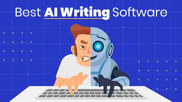

ABOUT AI WRITER
Here are some paragraph that AI writer write.
Climate change is one of the most pressing issues facing our planet today. The Earth's average surface temperature has risen by about 1.5 degrees Fahrenheit since the late 19th century, and it is projected to rise another 0.5 to 8.6 degrees Fahrenheit by the end of this century. This increase in temperature is largely due to human activity, such as burning fossil fuels, like coal and oil. Burning these materials releases what are called greenhouse gases into the atmosphere, and these gases trap heat from the sun's rays inside the Earth's atmosphere causing the Earth's temperature to rise.The effects of climate change are already being felt by people all over the world. Extreme weather events, like hurricanes, floods, and wildfires are occurring more frequently. And as sea levels continue to rise, coastal communities are increasingly at risk for flooding and other damage from severe weather events. Climate change also threatens the food supply, as crops are being damaged by heatwaves and droughts. In addition, rising temperatures are causing ocean waters to warm and become more acidic, which harms marine life and disrupts ecosystems that people rely on for food and livelihoods.Clearly, climate change is a major problem that we need to address urgently. But there is still time to take action to mitigate its effects. By reducing our emissions of greenhouse gases, we can slow the rate of climate change and give ourselves more time to adapt to its impacts.

Pros:• Can help raise awareness about climate change
• May help people become more environmentally conscious
• Could lead to more people taking action to reduce their carbon footprint
• Might inspire people to switch to renewable energy sources
•Could help children better understand the science behind climate change
Cons:
• The message could be lost in all of the other noise about climate change
• Some people may find it depressing
• It could make people feel like they are powerless to make a difference
AI writer has good and bad. it can help us to have more correct essay, it can make us learn more.
But also they may help some students to cheat and give some bad effect.
We should use AI writer properly.